Description
-Extended Potion refers to a specific type of potion that has a longer duration compared to the standard version of the same potion. Extended Potions are created by adding certain ingredients to the brewing process,
which results in the potion's effects lasting for an extended period of time. These extended potions are particularly useful for players who want the effects of a potion to last longer before needing to drink another
one.
-In Minecraft, not all potions can be extended. Only certain potion effects can be extended by adding Redstone during the brewing process. Potions that can be extended include:
Potions That can be Extended:
-
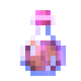
Potion of Fire and Resistance
When extended, it provides an 8-minute duration rather than the default 3 minutes.
-
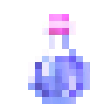
Potion of Swiftness
The extended version grants 8 minutes of swiftness.
-
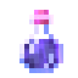
Potion of Slowness
The extended version of this potion results in an 8-minute duration.
-
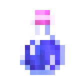
Potion of Water Breathing
This can be extended to provide 8 minutes of water breathing.
-
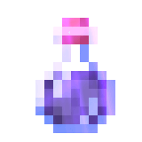
Potion of Invisibility
When extended, it gives 8 minutes of invisibility.
-
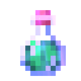
Potion of Leaping
The extended version grants 8 minutes of the leaping effect.
-
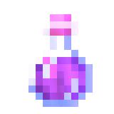
Potion of Regeneration
When extended, it provides 22 seconds of regeneration instead of the default 45 seconds.
-
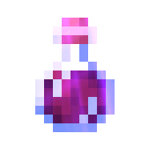
Potion of Strength
The extended version gives 8 minutes of strength.
-
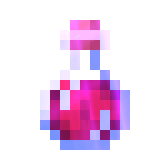
Potion of Healing
Extended healing potions provide 8 points of health.
-
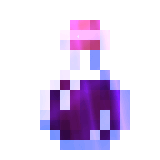
Potion of Harming
The extended version inflicts 8 points of damage to the target.
-
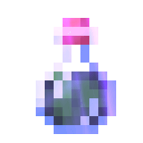
Potion of Poison
The extended poison potion results in a longer duration of poison.
-
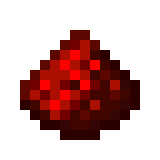
Redstone Dust
Modifier Ingredient
Extended Potion refers to a specific type of potion that has a longer duration compared to the standard version of the same potion. Extended Potions are created by adding certain ingredients to the brewing
process, which results in the potion's effects lasting for an extended period of time. These extended potions are particularly useful for players who want the effects of a potion to last longer before needing to
drink another one.
Redstone Dust is used to create extended potions. It extends the duration of the potion's effects.